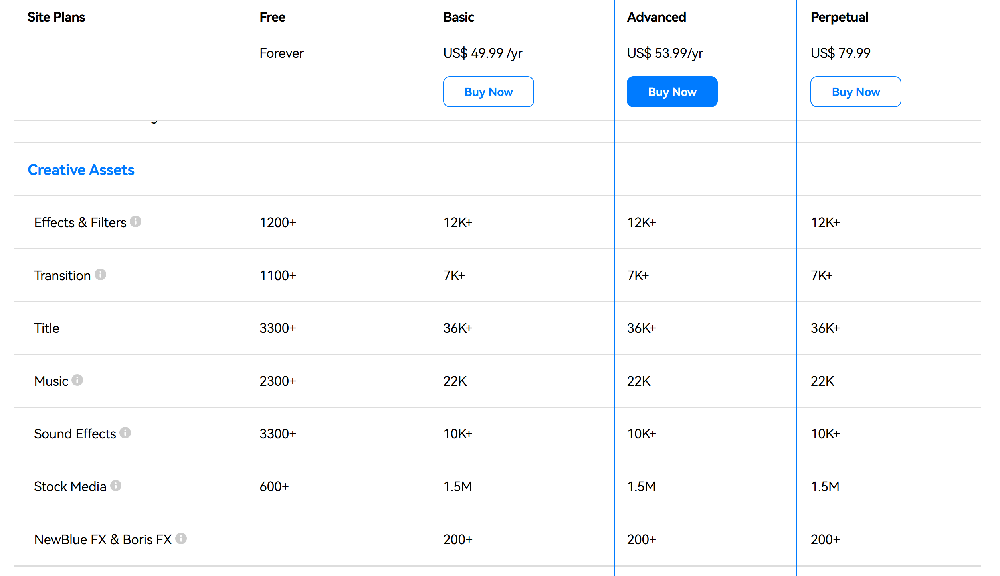
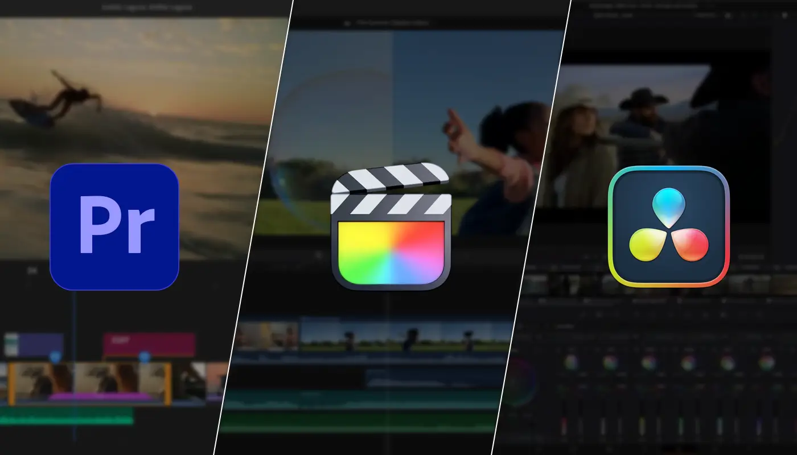

2026 年适合所有创作者的 10 款最佳 CapCut 替代品

在短视频盛行的今天，视频编辑已不再只是一项专业技能，而是融入到日常生活中。无论你是记录日常点滴、制作教程，还是推广业务，一款可靠的编辑工具都至关重要。
CapCut 以免费且易于初学者使用而闻名，它为数百万人打开了视频创作的大门。它拥有超过 3 亿月活跃用户，全球下载量超过 10 亿次，一度占据了 80% 以上的移动视频编辑市场。
但随着创作者需求的不断增长，没有任何一款工具能够满足所有场景的需求。因此，我们整理了10款值得一试的CapCut替代方案。
为什么你应该寻找 Capcut 的替代品
2025年初，由于政府对字节跳动应用的限制，CapCut曾一度从美国应用商店下架。尽管后来它又回归了美国市场，但其能否在美国市场长期稳定运营仍存在不确定性，这让许多创作者对其内容创作的未来感到担忧。
与此同时，CapCut 2026 年更新的服务条款也引起了关注，尤其是关于上传内容的使用和授权方式。这引发了部分用户对其作品版权和所有权的担忧。
简而言之，CapCut 仍然是一个强大的工具，但美国政策的不确定性及其服务条款的限制促使一些创作者探索替代方案。
在欧洲，CapCut 不受此类法规影响，可以稳定使用，但许多人发现其价格偏高。如果你担心价格问题，可以通过找一些拼车服务获得更便宜的订阅服务。如果你既注重价格实惠又注重可靠性，同时仍在寻找 CapCut 的替代方案，请继续阅读——我们为你总结了 10 个最佳选择。
什么是好的 CapCut 替代品？
如今市面上有如此多的视频编辑工具，选择合适的 CapCut 替代品可能会让人不知所措。为了有效地缩小选择范围，你首先需要设定一些明确的标准。我建议根据以下几点来评估每个选项：
- 界面简单易用 ：CapCut 如此受欢迎的原因之一是其学习难度低。任何优秀的替代方案都应该让初学者也能轻松快速地制作视频。
- 全面的功能 ：一个可靠的替代品至少应该匹配 CapCut 的核心功能——剪辑、字幕、效果、音乐等等——这样你就不会觉得自己失去了基本功能。
- 修复 CapCut 的弱点 ：寻找超越 CapCut 限制的工具，例如多轨道编辑、高级色彩分级或专业音频处理，这些工具对于更严肃的创作者特别有帮助。
- 价格合理 ：由于 CapCut 是免费的，其他替代品的价格也应该不会太高。提供免费套餐或价格实惠的订阅服务，让你物有所值。
- 安全性和可靠性 ：除了功能之外，稳定性也至关重要。一个强大的替代方案应该安全可靠，并且不会因为政治或监管问题而消失。
考虑到这些要点，我挑选了十款 CapCut 的替代方案。其中一些符合所有条件，是出色的全能型选择；而另一些可能缺少一两个功能，但在特定领域却表现出色。你可以根据自己的需求，找到最适合自己的一款。
2026 年 10 款最佳 CapCut 替代品
- Filmora：适合大多数用户的最佳一体化编辑器
- iMovie：Apple 用户的最佳基本工具
- Videoleap：最适合 Apple 用户使用的高级工具
- Canva 视频编辑器：最适合团队和社交内容
- InShot：最佳移动优先编辑应用程序
- VEED.IO：最适合基于浏览器的编辑
- Adobe Premiere Rush：过渡到专业版的最佳工具
- Final Cut Pro：Mac 用户最佳的专业级编辑器
- 达芬奇：最适合调色和后期制作
- Adobe Premiere Pro：电影制作人的行业标准
Filmora：适合大多数用户的最佳一体化编辑器
Filmora 由 Wondershare 开发，是一款跨平台视频编辑器，可在 Windows、Mac 和移动设备上运行。根据我的经验，它与 CapCut 一样易于使用，但功能更齐全。跨平台支持让我在电脑和手机之间切换编辑非常方便。
一大亮点是其庞大的 Filmstock 库。它能让你访问数百万个视频片段、音乐曲目和图形元素，质量远超大多数免费资源。
除此之外，Filmora 还提供灵活的导出设置，允许你自定义分辨率、帧速率和比特率，以及针对流行社交平台的一键优化。
定价
Filmora 的订阅计划可能感觉有点复杂，但你可以从两个主要角度来考虑：个人订阅页面 和 捆绑销售页面。个人计划仅包含 Filmora 软件本身，而捆绑销售选项则增加了额外的功能，例如访问 Filmstock 资产库和 AI Portrait 插件。
在每个选项中，Filmora 都提供多个订阅等级，每个等级都有不同的功能和优势。如果你想了解完整的细分信息，官方网站上有一个详细的比较图表，可以清楚地显示各个等级之间的差异。
适用对象
非常适合任何级别的创作者 - 从初学者到高级用户 - 他们想要简单的编辑工具，而又不放弃专业品质的结果。
主要特点
- 界面友好，易于学习，拥有全套编辑功能
- 丰富的 AI 工具，包括智能场景检测、自动节拍同步和文本到视频生成
- 内置 Filmstock 素材库和灵活的导出设置，并针对社交平台进行一键优化
iMovie：Apple 用户的最佳基本工具
iMovie 是苹果内置的免费剪辑工具，主要功能包括剪辑、字幕、音频调整、4K 导出等，足以满足日常的轻量级剪辑需求。
话虽如此，在我看来，它并非 CapCut 的真正替代品。它的功能太基础，更适合家庭视频或学校作业，在效果和效率方面也达不到如今短视频创作者的期望。
尽管如此，许多人只使用 CapCut 进行简单的家庭或课堂项目。对于这些用户来说，iMovie 实际上是一个不错的选择。
主要特点
- 完全免费并预装在 Apple 设备上
适用对象
Apple 用户、视频创作新手以及任何进行家庭或日常编辑的人
亮点
- 界面直观，易于上手
- 免费 4K 导出，深度融入 Apple 生态系统
- 有限的效果和模板
Videoleap：最适合 Apple 用户使用的高级工具
Videoleap 是一款由以色列公司 Lightricks 开发的移动视频编辑应用。它最初在 iOS 平台上大受欢迎，现在也支持 iOS 和 Android 系统。很多人会想：既然 iMovie 已经内置在 iPhone 中，Videoleap 是如何在 iOS 平台上取得成功的？
从我在 iPhone 上的使用体验来看，答案显而易见——Videoleap 在创意功能方面非常出色。绿屏抠像和关键帧动画等工具为短视频增添了精致专业的质感——这是 iMovie 无法企及的。市场后来证明了，这正是 Videoleap 在 iOS 上如此迅速崛起的原因。
现在，Videoleap 也已支持 Android 系统，其用户群体更加广泛。对于专注于 TikTok、Reels 或 YouTube Shorts 并希望获得更多创意效果的创作者来说，Videoleap 无疑是 CapCut 的绝佳替代品。
定价
- 免费版本（有水印和功能限制）
- 高级订阅：约 7.99 美元/月或 35.99 美元/年（价格因地区而异）
适用对象
短视频创作者、社交媒体影响者以及热爱创意效果和编辑技巧的用户
主要特点
- 针对移动端编辑进行优化，快捷方便
- 4K 导出，带有 TikTok、Reels 和 YouTube Shorts 预设
- 免费版本功能非常有限；高级功能需要订阅
Canva 视频编辑器：最适合团队和社交内容
Canva 视频编辑器最让我印象深刻的是它继承了 Canva 的标志性风格——直观易用。我几乎不需要任何编辑经验；只需模板和拖放操作，几分钟就能制作出一个 TikTok 或 YouTube 视频。
话虽如此，它确实有其局限性。多轨道编辑和调色功能感觉有点弱，所以不太适合更复杂的项目。但能够直接利用 Canva 庞大的素材库，让整个流程变得快速高效，这对于团队项目和营销内容来说是一个巨大的优势。
定价
- 免费计划：基本功能+有限的模板
- 专业计划：每月 12.99 美元（或每年 119.99 美元），解锁完整资产库和品牌工具
适用对象
需要快速制作视频的社交媒体营销人员、团队创建者和内容经理
主要特点
- 庞大的即时社交媒体视频模板库
- 支持团队协作，非常适合营销和小组项目
- 拖放式编辑，易于学习
- 轻量级功能并不适合专业级制作

InShot：最佳移动优先编辑应用程序
InShot 是一款专为 TikTok、Instagram Reels 和 YouTube Shorts 等短视频平台设计的移动视频编辑应用程序，可在 iOS 和 Android 上使用。
它涵盖了所有基本功能——剪辑、合并、字幕和音乐——同时还提供高级工具，例如速度渐变、关键帧动画、画中画和多轨音频。此外，它还配备了丰富的滤镜、特效和贴纸库。
实际使用 InShot 后，最让我印象深刻的是它的轻巧和快速。打开应用后，我几乎无需任何学习，就能流畅高效地编辑出完整的短视频。整个体验完美契合了它的定位——专为追求快速创作内容的创作者打造。
定价
- 免费版本：包含广告和水印
- 一次性购买即可移除广告：3.99 美元
- 专业订阅：每月 4.99 美元或每年 19.99 美元
- 终身许可证：49.99 美元
适用对象
短视频创作者、社交媒体影响者以及任何喜欢使用手机随时随地进行编辑的人
主要特点
- 移动优先设计，针对短视频进行优化
- 支持 4K/60fps 导出
- 人工智能工具：自动字幕、背景消除和对象跟踪
- 免费版本有很大限制
VEED.IO：最适合基于浏览器的编辑
VEED.IO 是一款基于浏览器的在线视频编辑器——无需下载，只需在浏览器中打开即可开始编辑。它的一大亮点是 AI 字幕和翻译工具，可以自动生成并同步字幕。这对于想要节省后期制作时间的 YouTube 主播或社交媒体创作者来说尤其实用。
除此之外，VEED.IO 还支持剪切、合并、滤镜和音频编辑等基本功能，同时还提供在线协作。对于轻量级、快速交付的社交媒体内容来说，这是一个非常实用的选择。但需要注意的是，它的效果和调色工具不如专业软件那么先进。
定价
- 免费计划：包括水印和基本功能
- 基本费用：每月 18 美元（或每年 144 美元）
- 专业版：30 美元/月（或 288 美元/年）
- 商业：59 美元/月（或 708 美元/年）
适用对象
YouTube 用户、播客、社交媒体营销人员和远程协作团队
主要特点
- 100%基于浏览器，无需安装
- 人工智能字幕和翻译工具
- 高级功能需要订阅
- 与专业级编辑器相比，效果和色彩分级有限
Adobe Premiere Rush：过渡到专业版的最佳工具
Premiere Rush 是 Adobe 专为移动创作者设计的轻量级视频编辑器。它以简化的方式将 Premiere Pro 的核心功能带到你的手机上，同时与 Adobe Creative Cloud 无缝集成。
使用 Rush，你可以随时随地快速编辑，然后将项目同步到 Premiere Pro 进行高级微调。或者，完成后，你可以直接从 Rush 导出视频，并一键分享到 YouTube、Instagram 或 TikTok 等平台。
定价
个人保费：9.99 美元/月
适用对象
社交媒体创建者、内容营销人员和需要多设备工作流程的用户
主要特点
- 多轨时间线编辑
- 与 Premiere Pro 无缝连接
- 通过 Creative Cloud 实现跨平台集成
以上工具是 CapCut 的最佳轻量级替代品。如果你更换的主要原因是担心 CapCut 的服务条款，或者只是不想继续使用它（而不是因为它无法满足你的编辑需求），那么这些选项是你的最佳选择。
但是，如果你已经过了初学者阶段，现在正在寻找更专业级的编辑工具，那么以下选项值得考虑。
Final Cut Pro：Mac 用户最佳的专业级编辑器
Final Cut Pro 是 Apple 为 Mac 用户打造的专业级视频编辑软件，以其闪电般的渲染速度和流畅的性能而闻名。其独特的磁性时间线使多轨道编辑更加高效，并支持多机位编辑、360° 视频、HDR 和 ProRes RAW 等高级功能。
对于需要在 Mac 上制作专业内容的创作者来说，它是 Premiere Pro 的强大替代品。它与 Apple 的硬件和生态系统深度集成，充分利用 M 系列芯片的性能，提供极快的导出速度。
定价
- 一次性购买：299.99 美元
- 提供 90 天免费试用
适用对象
专业视频创作者、YouTuber、电影制作人和 Mac 用户
主要特点
- 高速渲染和流畅的性能，完全针对 Apple 芯片进行优化
- 磁性时间线，实现更高效的多轨道编辑
- 支持多机位、360°、HDR 和 ProRes RAW 项目
- 一次性购买，无需支付定期订阅费
达芬奇：最适合调色和后期制作
达芬奇 由 Blackmagic Design 开发，是一款专业级视频编辑软件，以其业界领先的调色和后期制作功能而闻名。它将剪辑、调色、音频、视觉特效和动态图形集成在一个平台上，成为众多电影工作室和专业创作者的首选。
免费版本已经非常强大，提供多轨道编辑、高级调色工具和 4K 导出功能。付费版本 达芬奇 Studio 则更进一步，提供高级降噪、立体 3D、AI 工具等功能。虽然学习难度较高，但一旦掌握，就能提供超越大多数竞争对手的专业效果。
定价
- 免费版本：功能丰富，适合大多数用户
- Studio 版本：一次性购买 295 美元
适用对象
电影工作室、专业视频创作者以及需要顶级调色和图像质量的用户
主要特点
- 行业领先的色彩工具（色轮、曲线、LUT、HDR 校正）
- 集编辑、调色、特效和音频于一体的一体化平台
- 强大的免费版本；Studio 解锁 AI 和高级工具
- 学习曲线更陡峭，最适合专业用途
Adobe Premiere Pro：电影制作人的行业标准
Adobe Premiere Pro 无需过多介绍——多年来，它一直是视频编辑领域的标杆。即使是从未接触过编辑软件的人也可能听说过它，而且至今它仍然是业内最强大的工具之一。
它支持多轨道编辑、精确调色、音频混合和动态图形，同时与 After Effects、Photoshop 和 Audition 等其他 Adobe 工具无缝集成，使其成为完整专业工作流程的一部分。
定价
- 独立订阅：22.99 美元/月
- 包含在 Adobe Creative Cloud All Apps 计划中：每月 59.99 美元
适用对象
专业视频创作者、电影制作人、YouTuber、广告团队和营销专业人士
主要特点
- 行业标准，功能全面，兼容性强
- 与 After Effects、Audition 和其他 Adobe 工具深度集成
- 支持多机位编辑、VR、HDR 和团队协作
- 学习曲线陡峭，长期订阅成本相对较高
结论
CapCut 作为一款免费的剪辑工具，确实帮助无数人轻松踏入视频创作的世界。但随着需求的增长，它的局限性也愈发明显，升级到更强大的工具也就成了理所当然的下一步。
在本文中，我们介绍了多种替代方案：适用于简单、适合初学者的编辑的 iMovie；适用于短视频创作者的 InShot 和 Videoleap；以及适用于高级用户的 Final Cut Pro 和 达芬奇 等专业工具。
如果要推荐最全面的选择，Filmora Video Editor绝对是 CapCut 的理想"升级版"。它保留了初学者喜爱的易用性，同时添加了更丰富的效果和更精细的控制，帮助你将内容提升到一个新的水平。
常问问题
哪个应用程序比 CapCut 更好？
Filmora 是个不错的选择。它界面简洁，却提供了色轮、LUT 支持、关键帧、多轨音频和海量特效库等高级工具。非常适合那些追求强大功能又不失易用性的创作者。
人们为什么放弃 CapCut？
许多用户放弃 CapCut 是因为字节跳动的政策规定，该公司保留使用、修改和分发通过该应用上传内容的广泛权利。这引发了创作者对版权和所有权的严重担忧。
2026 年 CapCut 还好用吗？
是的，CapCut 在 2026 年依然出色。它仍然是最受欢迎的免费移动编辑器之一，拥有 AI 工具、模板和社交友好的导出功能。然而，一些创作者为了专业功能转而使用 Filmora、Final Cut 或 达芬奇，或者由于字节跳动严格的版权政策而避免使用 CapCut。